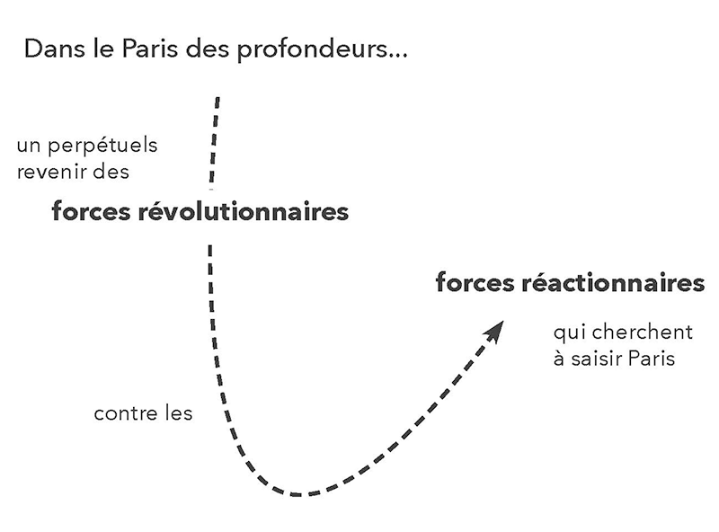
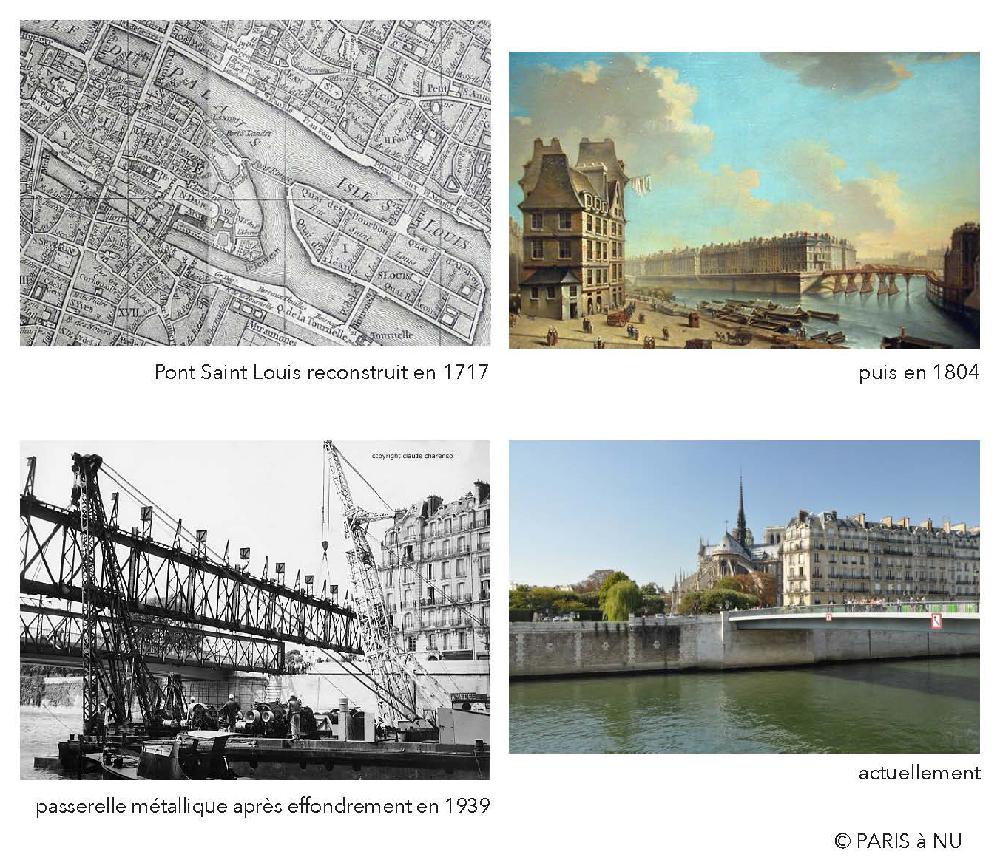
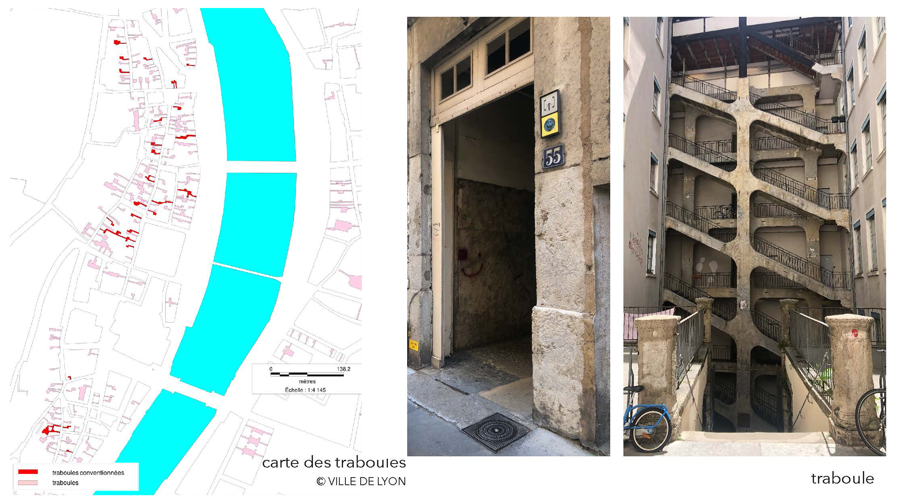
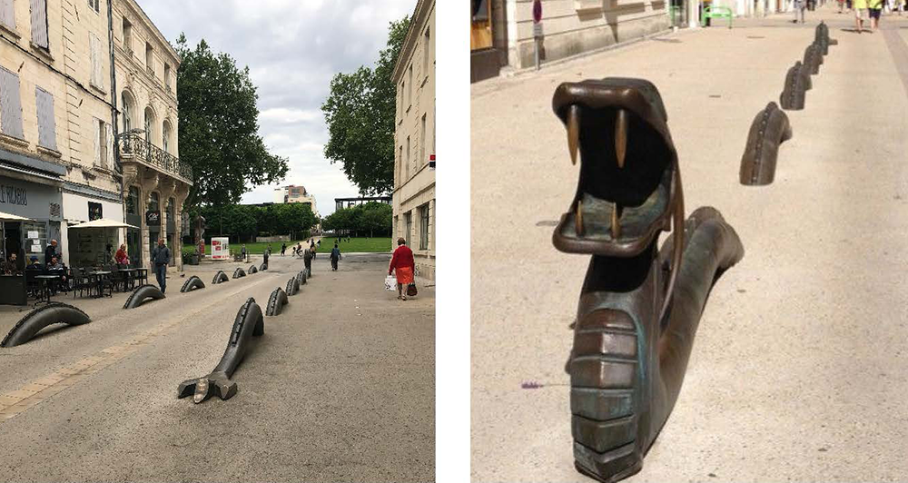

Mythes Historiques
Clarisse Protat
Club ASAP 11
septembre 2026
Temps de lecture : 3 min
Parlons du mythe historique.
L’introduction de ce club ASAP n°11 a définit le mythe comme un « objet dont l’histoire a été effacée ». Pourtant, le mythe historique se construit volontairement autour de faits réels passés, créant ainsi une espèce de confusion entre imaginaire et réalité.
Nous allons l’illustrer en nous appuyant sur le récit très intéressant de Pacôme Thiellement Paris des profondeur. Un ouvrage publié en 2022 dans lequel l’auteur se promène dans Paris et nous donne des clés de lectures historiques, mythologiques et religieuses, en associant les lieux à des légendes urbaines célèbres ou non.
Pacôme Thiellement décrit Paris comme un dragon.
Ce qu’il observe tout au long de ses nombreuse promenades, c’est cette ville-dragon en proie aujourd’hui à des forces opposées : les forces révolutionnaires d’un côté et les forces réactionnaires de l’autre.
Les forces réactionnaires vous les connaissez, c’est assez classique : la grande bourgeoisie, les néo-libéraux et les fascistes... qui cherchent à se saisir de Paris.
En face, celles qui les combattent sont les forces révolutionnaires que l’auteur définit ainsi « isiaques, osiriennes* et gitanes ».
Pourquoi ? Eh bien parce que le Paris des profondeurs qu’il décrit, porte de nombreux signes de l’appartenance isiaque, osirienne et gitane de Paris, avec de toutes aussi nombreuses légendes urbaines associées à cette appartenance.
* Isiaque et Osirienne : tout simplement en rapport avec Isis et Osiris les dieux égyptiens

Pour le Paris isiaque, il y a des réalités historiques qui sont citées dans le livre, mais il y a aussi une grande part de mythe, notamment avec des représentations cinématographiques, littéraires qui l’exagère et le font infuser dans notre culture.
Et c’est aussi directement scellé dans l’architecture qui est ici un support de cette force révolutionnaire.
Explicitons un peu plus les forces révolutionnaires gitanes.
Pour ça il faut qu’on se rende sur le parvis de Notre Dame, où se situe la
« première apparition des Gitans dans l’histoire de France »*, toujours d’après le récit de Pacôme Thiellement.
Des articles de 1427, rapportent l’arrivée de Gitans venue de Basse-Égypte, qui content des légendes, qui lisent les lignes de la main, notamment avec les diseuses de bonne aventures, etc. La parvis de Notre Dame est à ce moment la une place importante : le lieu urbain du mysticisme.
Cette image a principalement infusée dans la culture par le Bossu de Notre Dame de Victor Hugo (1831). Hugo place l’action en 1482. Mais il se trouve que ça fait en fait déjà 60 ans que les Gitans ont été chassés de la place ou ils s’étaient établit, et même plus généralement de Paris.
* Cette information reste néanmoins probablement à vérifier.
Les Gitans sont en effet chassés peu après leur arrivée sur le parvis de Notre Dame. Ils sont bannis de la Cité par l’Eglise et on les force à prendre le bac. On les dépose par groupe sur les berges de l’île Notre-Dame, actuelle proue de l’île Saint-Louis (en attendant de les emmener plus loin).
De ce bannissement, reste une superstition urbaine.
En partant, le doyen des Gitans aurait jeté un maléfice au bras de la Seine qu’on les avait forcés de franchir. Depuis, le pont Saint Louis s’effondre de façon récurrente.
Pour Pacôme Thiellement cette superstition n’est pas du tout anecdotique. Certes le lien de causalité entre la malédiction jetée et l’effondrement successif du pont est totalement ubuesque, mais ça permet de véhiculer l’information d’une communauté gitane chassée de l’espace urbain, encore aujourd’hui largement invisibilisée.
Et encore mieux, cette superstition associe une infrastructure urbaine à cette histoire, la rattache à quelque chose de matériel. Donc ça désinvisibilise... D’autant que ce n’est pas le seul pont parisien support d’atrocités historiques commises sur des minorités*.
* Notamment le massacre des algériens le 17 octobre 1961

Rappel d’une des questions de l’introduction du club ASAP n°11 :
« Y a-t-il une réemergence des marges de la ville grâce au mythe urbain ? »
Donc à cette question on peut répondre oui.
D’ailleurs le mythe du bossu d’Hugo a donné un regain d’intérêt à la cathédrale et lui a offert une protection à vie. Ceci démontre bien la force d’un mythe très véhiculé.
Aujourd’hui la cathédrale est tellement importante dans notre imaginaire collectif qu’on en oublie presque la part, pourtant toute aussi importante, de la place dans l’histoire de Paris.
Mais attention à la récupération par les fameuses forces réactionnaires ! Pour expliciter ce risque, intéressons nous à un des aspects de la ville néo libérale : le tourisme.
Direction Lyon. Parlons des traboules qui véhiculent un paquet de légendes urbaines. En tant que visiteur, nous nous sommes laissés raconter ces légendes. La version officielle, servie sur place par les diverses informations touristiques, est la suivante :
Les traboules sont des passages liés au commerce de la soie et aux canuts qui les empruntaient. Ils auraient été des lieux important où s’organisait la lutte ouvrière. Notamment la révolte des Canuts (1831, 1834 et 1848) avec des affrontements entre ouvriers et forces de l’ordre dans la Cour des Voraces.
Un siècle plus tard ces passages secrets auraient servis aux résistants.

Selon plusieurs historiens, il s’avère que ces traboules ne seraient pas vraiment les hauts lieux de résistance et de progrès sociaux qu’on décrit. Ce sont en effet juste les entrées de belles résidences.* Et n’auraient pas servis de passages secrets aux Résistants puisque l’armée du IIIème Reich les connaissait également. Nous sommes donc face à un mythe historique qui appuie un narratif inventé sur de vrais éléments.
Alors est-ce vraiment grave si c’est faux ? Après tout, on a bien besoin de récits de luttes sociales et urbaines.
* Immeubles de la Renaissance dans le Vieux-Lyon, immeubles de canuts du 19e siècle à la Croix-Rousse et immeubles bourgeois du 18e ou 19e en bas des pentes et en presqu’île
Certes, mais premièrement :
Les bénéfices de ce récit servent avant tout le tourisme qui sert lui-même la ville néo-libérale. Bien sûr qu’on va préserver les traboules et les quartiers dits «historiques», outils massifs d’un certain marketing lyonnais, au détriments d’autres quartiers qu’on aura à contrario aucun mal à raser pour y loger toutes les infrastructures nécessaires au nouveau flux touristique, ou à vendre aux investisseurs étrangers.*
* Même logique à Marseille avec Euromed qui sélectionne les quartiers à rayer de la carte et à vendre
Deuxièmement :
Nous ne doutons pas que les typologies des traboules et des cours lyonnaises ont assez logiquement favorisées le rassemblement d’ouvriers. Mais le récit touristique actuel exagère le rôle de l’architecture dans ces mouvements de révoltes.
En racontant cette histoire d’un point de vue architectural, on donne moins d’importance (voir on invisibilise) les autres conditions nécessaires à ces soulèvements sociaux. Par exemple pour les canuts : leur positionnement politique, la collectivisation mise en place, etc.
Sinon ça voudrait dire qu’il suffit de faire des circulation semi-extérieures communes et des cours abritées des services de police pour créer les conditions nécessaires et suffisantes à la révolte sociale... Nous savons tous que non.
L’architecte non-militant ne fait rien advenir, et ça c’est pas un mythe.

L'ensemble des articles issus du club asap 02 sont disponibles ci-dessous:
| # | Titre | Auteur | |
|---|---|---|---|
| 110 | Fact-Checking & Reality Shifting | Louis Fiolleau | Club #11 |
| 111 | Hantologie critique de l'architecture | Lola Burdin & Noam Gueguen | Club #11 |
| 112 | Les Grands Travaux mitterrandiens | Louis Voyer | Club #11 |
| 113 | Liturgiques Excel-tiques | Sirine Ammour | Club #11 |
| 114 | Movi(e)ng Home | Antoine Maisonneuve | Club #11 |
| 115 | Mythes Historiques | Clarisse Protat | Club #11 |
| 116 | Habiter le trouble | Mateo Narejos | Club #11 |
| 117 | Objectification, concrétisation & rebond magique | Hugo Forté | Club #11 |
| 118 | Profaner la ville rationnelle | Marie Frediani | Club #11 |